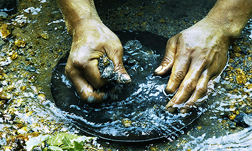

| Medio ambiente | Entretenimientos | Politica | Viral |
En regiones afectadas por la minería del oro, la inhalación de vapores de mercurio junto con la ingesta de peces contaminados, constituyen las principales fuentes de contaminación con este metal, el cual afecta la salud humana de múltiples maneras. No obstante, otra fuente adicional reconocida por la Organización Mundial de la Salud (OMS) es el consumo de agua contaminada. Aunque por lo general las aguas superficiales contienen bajos niveles de mercurio debido a que este es rápidamente consumido por microorganismos acuáticos, se ha encontrado que bajo ciertas circunstancias su concentración en el agua puede alcanzar valores alarmantes, superando incluso los 2,0 µg/L —valor estipulado en la legislación colombiana para aquellas fuentes hídricas destinadas para consumo humano y doméstico—. En algunos municipios colombianos se han detectado concentraciones de mercurio en aguas superficiales por encima de los 3,0 µg/L y en otros lugares del mundo por encima de los 8,0 µg/L.
Primero se tritura la mena, generalmente se hace en trituradoras de mandíbula y de cono.Segundo la molienda primaria de la mena triturada en circuito cerrado, esta molienda se hace en molinos de bolas o de martillos. Tercero sigue la separación gravimétrica,La separación en la mena molida de concentrados gruesos, finos y colas, se hace en mesas de concentración gravimétrica.Luego sigue a amalgamación de los finos de la mena, generalmente se hace en tambores de amalgamación, con revestimiento interior de caucho o plástico, y piedras redondeadas en lugar de bolas de acero, para evitar contaminación del mercurio con el hierro. Estos tambores deben tener cierres herméticos, y tamices en la parte superior del tambor, que solamente dejen pasar las colas suspendidas en el agua de lavado. Despues viene la separación de amalgama y mercurio en circuito cerrado. La amalgama retirada del tambor de amalgamación con exceso de mercurio debe llevarse a un filtro prensa para separar la amalgama del exceso de mercurio. y por ultimo la fundición de la esponja de oro a botones o lingotes, la esponja de oro obtenida